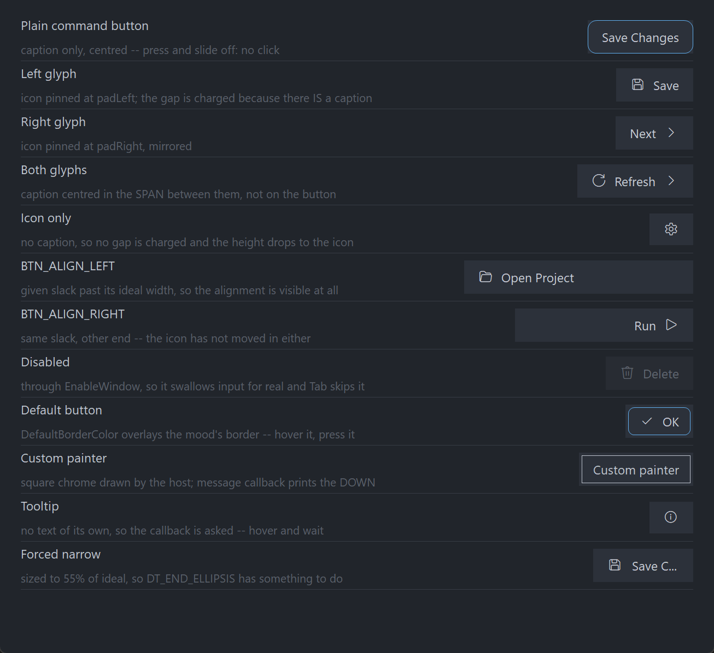

PsButton
An owner-drawn command button for FreeBASIC Win32 applications: a rounded rectangle with an optional glyph on the left, an optional caption, and an optional glyph on the right.
It is momentary. It fires on release and never latches, so it has no selected or checked state at all — every state it carries is either transient (hot, pressed, focused) or owned by you (enabled, default). It takes focus, so it can be reached with Tab and operated with Space or Enter, and it draws itself entirely: there is no system BUTTON underneath, and nothing about its appearance depends on the visual style the user happens to be running. Every colour it paints is one you can set.
Either icon slot holds a glyph from a font — Segoe Fluent Icons codepoints, or any font's, drawn with a separate font handle you supply — or a real image file (.ico / .png / .bmp / .jpg), loaded from a path. Glyph or image, never both on the same side. There is no HICON path.
What it looks like

The client area of the demo (main.bas + frmMain.inc), built DPI-aware via main.rc / main_manifest.xml and captured at the author's display scaling. Each row is one feature: the plain button, left/right/both glyphs, icon-only (legitimately shorter — no caption means no line of text to be as tall as), BTN_ALIGN_LEFT and BTN_ALIGN_RIGHT given slack past their ideal width so the alignment is visible, a disabled button, the default button with its accent border, a host-supplied painter, a tooltip-only button, and a caption forced to ellipsize.
Colours are the shipped dark defaults; every one of them is settable.
Requirements
Files to copy into your project:
| File | Purpose |
|---|---|
PsButton.bi | Declarations — types, callbacks, constants, function prototypes |
PsButton.inc | Implementation |
PsBufferPaint.bi | The flicker-free drawing surface the control paints through |
PsBufferPaint.inc | Its implementation |
PsImage.bi / PsImage.inc | The image loader behind PsButton_SetImageLeft/SetImageRight. Required even if you only ever use glyphs: PsButton.bi includes it. |
PsTipHost.bi / PsTipHost.inc | The tooltip backend switch — see Tooltips: two backends |
PsTooltip.bi / PsTooltip.inc | The owner-drawn tooltip. Required even if you never switch to it: PsTipHost.inc includes it. |
AfxNova is required. The control is built on CWindow, and PsBufferPaint draws through AfxNova\CGdiPlus.inc. Sources include AfxNova relative to the workspace root (#include once "AfxNova\CWindow.inc"), so builds need the workspace root on the include path:
fbc64.exe -i "C:\dev" main.basInclude order. PsButton.inc pulls in its own .bi, which pulls in PsBufferPaint.bi. The two implementation files are included in this order:
#include once "PsBufferPaint.inc"
#include once "PsButton.inc"GDI+ must be running before the first repaint and must outlive the last one. The control renders all of its geometry through GDI+, so bracket your message loop:
dim as ULONG_PTR gdipToken = AfxGdipInit()
' ... create windows, run the message loop ...
AfxGdipShutdown( gdipToken )AfxGdipShutdown must come after every window is destroyed, because each repaint builds and tears down a PsBufferPaint.
Never name an identifier ok. GDI+ defines Ok = 0 as a Status enum value in namespace AfxNova, and hosts customarily say using AfxNova. An existing variable, parameter or function called ok becomes a duplicate definition the moment you adopt these files. Use bOK instead.
There is no pump filter to install. If you are coming from a neighbouring control this is worth reading twice: there is no PsButton_FilterMessage, and there is nothing for you to call from your message loop. The control owns no popup and no second top-level window, so nothing needs intercepting ahead of the dispatch.
For Tab navigation, call IsDialogMessage in your message pump. The control is a tabstop, but only the dialog manager moves focus between tabstops:
do while GetMessage( @uMsg, null, 0, 0 )
if uMsg.message = WM_QUIT then exit do
if IsDialogMessage( hWndForm, @uMsg ) = 0 then
TranslateMessage @uMsg
DispatchMessage @uMsg
end if
loopWithout it you still get full mouse behaviour, and Space and Enter still work once the control has focus — only Tab navigation is lost.
Give something the focus at startup. IsDialogMessage acts only when the focused window is already a descendant of the window you pass it. A real dialog does this in WM_INITDIALOG; an ordinary window must call SetFocus on its first control itself. Skip it and the first Tab does nothing, which is indistinguishable from the tabstops being broken.
The control creates itself as a tab item, not a tab container. PsButton_Create passes an extended style of 0 explicitly, rather than accepting CWindow.Create's default of WS_EX_CONTROLPARENT OR WS_EX_WINDOWEDGE. Nothing is asked of you here except that you not add WS_EX_CONTROLPARENT to the control afterwards: with it, the dialog manager descends into the control hunting for child tabstops, finds none, and skips the control entirely.
The control never creates a font. Both fonts are borrowed: you create them, you keep them alive for as long as the control lives, and you destroy them. See PsButton_SetFont (the caption and measuring font) and PsButton_SetGlyphFont (the icon font).
Quick start
' Create it. The control is created zero-sized and hidden.
dim as HWND hButton = PsButton_Create( hWndParent, IDC_FRMMAIN_SAVE )
' The two fonts. Both stay yours to destroy.
PsButton_SetFont( hButton, ghFont(GUIFONT_10) ) ' caption, and the measuring font
PsButton_SetGlyphFont( hButton, ghFont(SYMBOLFONT_10) ) ' e.g. Segoe Fluent Icons
' Be told when it is clicked.
PsButton_SetClickCallback( hButton, @MyButton_Click )
' Content. Order does not matter — every setter marks the layout dirty and one
' measuring pass covers the lot.
PsButton_SetText( hButton, "Save" )
PsButton_SetGlyphLeft( hButton, wchr(&hE74E) )
' Ask how big it wants to be, then place it. GetIdealSize is valid immediately,
' before the control has ever been sized.
dim as long iw, ih
PsButton_GetIdealSize( hButton, iw, ih )
SetWindowPos( hButton, 0, x, y, iw, ih, SWP_NOZORDER )
ShowWindow( hButton, SW_SHOW )And the callback:
sub MyButton_Click( byval hButton as HWND, byval id as long )
' A matched press+release with the cursor still inside, or Space/Enter while
' focused, or a programmatic PsButton_Click. `id` is whatever you set with
' PsButton_SetID — it defaults to the CtrlID passed to PsButton_Create.
SaveDocument()
end subThen, once the form is shown, give your first control the focus so Tab works:
SetFocus( hButton )That is the whole minimum. Everything below is refinement.
Concepts
The handle is a real HWND
PsButton_Create returns an ordinary window handle, and every PsButton_* function takes it. It is not an opaque type, so you can treat the control as the window it is — SetWindowPos to place and size it, ShowWindow to show it, GetDlgItem to find it by the CtrlID you passed at creation, EnableWindow to disable it.
It is created zero-sized and hidden
PsButton_Create gives the control the styles WS_CHILD, WS_TABSTOP, WS_CLIPSIBLINGS and WS_CLIPCHILDREN, and an extended style of 0. WS_VISIBLE is deliberately absent, so a newly created control shows nothing until you size it and call ShowWindow. That lets you build and configure a control before it is ever seen.
CS_DBLCLKS is not set on the window class either — see Behaviour and limits.
The layout model
This is the part worth understanding before anything else, because it is not what most button APIs do.
The two icon cells are pinned to the padding. The left cell sits at rcButton.left + padLeft, the right cell at rcButton.right - padRight - iconWidth, and neither ever moves. BTN_ALIGN_LEFT / BTN_ALIGN_CENTER / BTN_ALIGN_RIGHT then place the caption in the span left over between them — not in the button.
So a button with a left glyph and BTN_ALIGN_CENTER centres its caption on the leftover space, which sits visibly right of the button's own centre. That is the intended model: the icons frame the caption, they do not travel with it.
The geometry, if you need to predict it:
ringPad = focusGap + focusThickness reserved ALWAYS, focused or not
textW = the measured caption width, 0 when there is no caption
textH = GetTextMetrics.tmHeight ONE height for the control
leftBlock = hasLeft ? iconWidth + (hasText ? iconGap : 0) : 0
rightBlock = hasRight ? iconWidth + (hasText ? iconGap : 0) : 0
contentH = max( hasText ? textH : 0 , (hasLeft or hasRight) ? iconHeight : 0 )
idealW = 2*ringPad + padLeft + leftBlock + textW + rightBlock + padRight
idealH = 2*ringPad + padTop + contentH + padBottom
rcButton = rcClient deflated by ringPad on all four sides
rcIconLeft = pinned at rcButton.left + padLeft, iconWidth x iconHeight, v-centred
rcIconRight = pinned at rcButton.right - padRight - iconWidth, same, v-centred
rcText = ( rcButton.left + padLeft + leftBlock ,
rcButton.right - padRight - rightBlock ), v-centred on textH
rcVisual = rcButton inflated by ringPadThree consequences follow, and all three catch people out:
rcText is the caption span, not the caption ink. It is the whole box between the two icon blocks. That is exactly what DT_END_ELLIPSIS needs — handed a tight box around the glyphs, the ellipsis would have nowhere to happen and the caption would simply clip. A paint callback that fills rcText to draw a background "behind the text" fills the entire span.
The icon gap is charged only when there is a caption to separate from. An icon-only button costs padLeft + icon + padRight and nothing else, so the glyph sits properly centred in its own padding instead of being shoved off-centre by a gap with nothing on the far side of it.
Content height ignores the font when there is no caption. An icon-only button in a row of captioned ones therefore has a shorter ideal height — nothing in it is as tall as a line of text, and that is the honest answer. A host laying out a row of buttons takes the maximum itself rather than having a phantom text height baked in here.
An absent part gets an empty rect, not a zero-width one tucked against an edge, so a paint callback can test IsRectEmpty instead of re-deriving presence from the strings and images it was handed. A cell counts as present when its side carries either a glyph or a successfully loaded image.
Layout is lazy. A setter marks the layout stale and asks for a repaint; the next paint — or any rect, size or tone query — recomputes it. There is no begin-update / end-update pair to remember, and setting six properties in a row costs one measuring pass, not six.
When the button is smaller than ideal
Rects are computed honestly rather than squeezed. The icons keep their declared size and stay pinned to their padding, and rcText is what collapses — clamped to degenerate (left = right) rather than going negative. So a too-narrow button loses its caption to the ellipsis and keeps its icons, which is the useful failure. Vertically, a client shorter than the content clips top and bottom rather than deforming anything.
The focus-ring band is always reserved
The ring is drawn inside a band of focusGap + focusThickness pixels around the button chrome, and that band is reserved whether or not the control currently has focus. This is why the button does not jump when you Tab onto it — and it is why changing either focus-ring value changes the ideal size.
rcButton is the client rect deflated by that band; rcVisual is rcButton inflated by it again, which is the full client area.
The icon cell is declared, never measured
PsButton_SetIconSize decides how much room a glyph gets, and the control never measures the glyph font. A glyph too large for the cell clips; it does not resize the button. That is why PsButton_SetGlyphFont is a paint-time input only — changing it repaints but never re-lays-out.
The caption font is the opposite: it is the measuring font, and changing it re-measures. With no caption font set, the control measures and paints with the stock DEFAULT_GUI_FONT.
An icon slot holds a glyph or an image, never both
PsButton_SetImageLeft and PsButton_SetImageRight take a file path — .ico, .png, .bmp, .jpg — and draw that image in the icon cell instead of a glyph. The setters keep the invariant themselves: setting an image clears that side's glyph string, and setting a non-empty glyph frees that side's image. You never have to clear one before setting the other.
The image is drawn into the same declared cell a glyph would have used (PsButton_SetIconSize), aspect ratio preserved, so switching a side from a glyph to an image changes no geometry at all — the ideal width and the cell rect are identical either way.
The control owns the images it loads. They are freed when the window is destroyed, when you pass "", when the load fails, and when you set a glyph on that side. You pass a path and nothing else; there is no handle for you to keep alive or release.
if PsButton_SetImageLeft( hButton, ExePath() & "\save.png" ) = 0 then
PsButton_SetGlyphLeft( hButton, wchr(&hE74E) ) ' fall back to the glyph
end ifPixels, and who scales them
Only the creation-time defaults are DPI-scaled for you:
| Setting | Default | DPI-scaled at create? |
|---|---|---|
| Padding left / right | 12 | Yes |
| Padding top / bottom | 6 | Yes |
| Icon gap | 8 | Yes |
| Icon width | 16 | Yes |
| Icon height | 16 | Yes |
| Corner curvature | 12 | Yes |
| Border thickness | 1 | No |
| Focus-ring gap | 2 | Yes |
| Focus-ring thickness | 1 | No |
Every setter afterwards takes raw pixels and expects you to scale — typically pWindow->ScaleX(...) / ScaleY(...). The two thickness values should not be scaled at all: a hairline should stay a hairline at any DPI.
Corner curvature is a diameter, not a radius
PsButton_SetCornerCurvature takes the ellipse diameter that GDI's RoundRect vocabulary uses. PsBufferPaint halves it internally, so 12 draws a 6-pixel radius. 0 gives square corners.
Who sizes the control
By default, nobody but you: measure with PsButton_GetIdealSize and call SetWindowPos. Turn on PsButton_SetAutoSize( h, true ) and the control calls SetWindowPos on itself — preserving its top-left — whenever something that changes the ideal size changes: caption, glyphs, caption font, padding, icon gap, icon size, focus ring. Turning it on applies immediately rather than waiting for the next content change.
Programmatic setters are silent — with one deliberate exception
No setter on this control fires the click callback. PsButton_SetText, PsButton_SetEnabled, PsButton_SetDefault and the rest change what is drawn, never what was clicked.
PsButton_Click is the exception, and it fires the click callback on purpose. It is an action, not a state setter — Win32's own BM_CLICK sends BN_CLICKED too — and it is the door your accelerator uses, since this control parses no mnemonics. A silent version would have no purpose.
How a click is decided
Pressing the left button focuses the control (unconditionally, even if your message callback goes on to suppress the press), then takes mouse capture. The click fires on release, and only if the press started on the control and the cursor is still over it. So the standard escape gesture works: press, slide off, release — nothing happens.
While a press is live and the cursor has slid outside, the control stops painting as pressed but the gesture is not over. Slide back on and it re-arms.
Space and Enter take exactly the same path as a completed click, so the keyboard and the mouse cannot drift apart: both are user action, both notify.
Keyboard handling is narrow on purpose
The control answers WM_GETDLGCODE with DLGC_WANTALLKEYS only for Space and Enter, and only when the dialog manager is asking about one specific message. Claiming keys unconditionally would swallow Tab and break the very navigation the control opted into by being a tabstop; claiming nothing would let IsDialogMessage route Enter to your dialog's default button before the control ever saw it.
The default button is appearance only
PsButton_SetDefault draws DefaultBorderColor over whichever mood's border would have been used, and does nothing else. It does not claim Enter from elsewhere in the dialog — the control claims Enter only while it is itself focused. Routing the dialog's default key stays your job. Nothing stops you marking two buttons default; the control does not police it.
The caption is also the window text
WM_SETTEXT, WM_GETTEXT and WM_GETTEXTLENGTH are all handled against the same store PsButton_SetText writes to, so SetWindowText / GetWindowText work and generic code that walks a form's children and reads their text sees a real caption. One store, two doors — DefWindowProc is deliberately not consulted, so there is no second copy to drift.
Enabling and disabling is real, not cosmetic
PsButton_SetEnabled calls EnableWindow. A disabled window receives no mouse input at all and the dialog manager's Tab skips it, so there is no way for a click or a keystroke to get past a cosmetic check. If you call EnableWindow on the control directly, the control notices through WM_ENABLE, greys itself, and drops any hover and live press — so the two routes cannot disagree.
Hover tracking has a safety net
WM_MOUSELEAVE is not reliably delivered when the cursor exits quickly or onto another control, which would strand the button painted hot. A 100 ms polling timer runs while the cursor is over the control and clears the hover state if the cursor is no longer inside. The poll is suspended while a press is live, because during capture the cursor is legitimately allowed to wander off and come back.
Lifetime
The control frees itself when its window is destroyed, and destroys its tooltip window with it. The two fonts you pass in stay yours. Destroy the parent and you are done.
Behaviour and limits
Firm properties of the control, not settings:
- It never latches. There is no
isSelected, no checked state, noSetSelected. A latching toolbar button and an on/off switch are different controls. isDefaultis appearance only. One border colour, applied last and with no mood test. It never claims Enter from elsewhere in the dialog.- No mnemonics.
"&Save"draws a literal ampersand —PsBufferPaint.PaintTextforcesDT_NOPREFIX, so this is enforced by the renderer rather than merely intended. Wire your own accelerator and callPsButton_Click. - No
WM_COMMANDto the parent. Notification is the click callback and nothing else. - No
HICONpath. An icon cell takes a font glyph or an image loaded from a file path, and nothing else — there is no way to hand the control anHICONor anHBITMAPyou already have. - A cell is a glyph or an image, never both. The setters enforce it in both directions, and an image charges exactly the same declared cell a glyph would.
- Single line only. The caption is drawn with
DT_SINGLELINE,DT_VCENTERandDT_END_ELLIPSIS; there is no multiline mode. - No pump obligation. There is no
PsButton_FilterMessage.IsDialogMessageis needed for Tab, but that is the dialog manager's requirement, not the control's. - No auto-repeat. Holding the button down fires nothing; the click happens on release.
- Double-clicks are not special.
CS_DBLCLKSis deliberately off, so a rapid second click arrives as an ordinary down/up pair and fires a second click. WithCS_DBLCLKSon, every second rapid click would arrive asWM_LBUTTONDBLCLKand be silently swallowed — and on a momentary command button a rapid second click is a legitimate second click. - Mouse capture is taken. The press/cancel gesture (press, slide off, release, nothing happens) consumes the guaranteed down→up pairing, so capture is required. It is released on the up-message before any callback runs, cancelled by
WM_CAPTURECHANGED, and released again inWM_DESTROY. A message callback cannot suppress the up-message. - No hit-test function. The whole client rectangle is the hit area, so a hit test could only ever return TRUE for points the caller already knows are inside.
- Arrow keys are not handled. Only Space and Enter activate the control.
- The right mouse button is reported, never acted on. A context menu is your business. No capture is taken for the right button, so a right-up can arrive without a matching down.
- No caption fallback for the tooltip. With neither tooltip text nor a tooltip callback answer, nothing shows.
- Invalid alignment values are ignored, leaving the current setting in place, rather than silently turning a typo into
BTN_ALIGN_LEFT. - Both fonts are borrowed. The control creates neither and destroys neither.
- Negative layout values clamp to 0. Padding, icon gap, icon size, curvature, border thickness and both focus-ring values are all floored at zero. A border or ring thickness of 0 means "do not draw it at all".
- An icon-only button is shorter than a captioned one. By design; take the maximum yourself when laying out a row.
- The caption span is not the caption ink.
rcTextis the whole span between the icon cells, which is what a paint callback receives.
API reference
Creation
| Function | Description |
|---|---|
PsButton_Create( hWndParent, CtrlID ) as HWND | Creates the control as a child of hWndParent and returns its window handle. CtrlID becomes the window's GWLP_ID, so GetDlgItem finds it, and is also the initial value reported to the click callback (override it with PsButton_SetID). Created zero-sized and hidden — size it with PsButton_GetIdealSize, place it with SetWindowPos, then ShowWindow. |
Caption, glyphs and tooltip
All of these are silent: they change what is drawn, never what was clicked.
| Function | Description |
|---|---|
PsButton_GetText( hButton ) as DWSTRING | The caption. |
PsButton_SetText( hButton, Text ) | Sets the caption; "" removes it, which also stops the icon gap being charged. Re-measures, and re-applies auto-size if it is on. Reachable equivalently as SetWindowText — one store, two doors. |
PsButton_GetGlyphLeft( hButton ) as DWSTRING | The left glyph string. |
PsButton_SetGlyphLeft( hButton, Glyph ) | Sets the left glyph — a font codepoint, e.g. wchr(&hE74E). "" removes it, giving back both its cell and its gap, so it changes the ideal width. |
PsButton_GetGlyphRight( hButton ) as DWSTRING | The right glyph string. |
PsButton_SetGlyphRight( hButton, Glyph ) | As above, for the right cell. |
PsButton_SetImageLeft( hButton, Path ) as long | Loads an image file (.ico / .png / .bmp / .jpg) into the left icon cell instead of a glyph, drawn into the same declared cell with its aspect preserved. Returns non-zero on a successful load. On success it clears the left glyph string; on failure it drops the half-built image so the cell is not reserved for nothing. "" removes any image and returns 0 — a zero return is therefore "no image on this side", not necessarily an error. Re-measures and re-applies auto-size. The control owns the image and frees it. |
PsButton_SetImageRight( hButton, Path ) as long | The same for the right cell, with identical semantics and return value. |
PsButton_GetID( hButton ) as long | The value handed to the click callback. |
PsButton_SetID( hButton, id ) | Sets it. This is a host payload: the control never uses it as a command id, so it cannot collide with anything. Defaults to the CtrlID passed at creation. |
PsButton_GetItemData( hButton ) as integer | Free-form host payload. |
PsButton_SetItemData( hButton, itemData ) | Stores anything integer-sized you want to associate with the button. Never touched by the control. |
PsButton_GetTooltipText( hButton ) as DWSTRING | The control's own tooltip text. |
PsButton_SetTooltipText( hButton, Text ) | Sets it. The control's own text always wins; the tooltip callback is consulted only when this is empty. Does not repaint — nothing visible changed. |
PsButton_GetTooltipHandle( hButton ) as HWND | The comctl32 tooltip window, for any TTM_* message you want to send it yourself. The control owns it and destroys it. Returns 0 while this button is on the PsTooltip backend — the honest answer, since a TTM_* sent to a PsTooltip window is silently ignored. |
PsButton_GetPsTooltipHandle( hButton ) as HWND | The PsTooltip window, or 0 while on the system backend. The door to PsTooltip_SetColors / SetFonts / SetStyle / SetMaxWidth / SetTitle / SetGlyph — none of which is mirrored here. |
PsButton_SetTooltipMode( hButton, nMode ) as boolean | PSTIP_MODE_SYSTEM (default) or PSTIP_MODE_PS. See below. |
PsButton_GetTooltipMode( hButton ) as long | Which backend is live. |
PsButton_SetHoverTime( hButton, milliseconds ) | Initial delay (TTDT_INITIAL) — how long the cursor must rest. Honoured by both backends. |
PsButton_SetAutoPopTime( hButton, milliseconds ) | How long the tip stays up (TTDT_AUTOPOP). |
PsButton_SetReshowTime( hButton, milliseconds ) | The shorter delay after a tip was recently dismissed (TTDT_RESHOW). |
Tooltips: two backends
The button ships on the system (comctl32) tooltip it has always used. PSTIP_MODE_PS switches this instance to PsTooltip: owner-drawn, themeable, word-wrapping without a hand-sent TTM_SETMAXTIPWIDTH, and — the one that matters structurally — not a subclass of the control it serves, so it still works when the window under the cursor is a descendant rather than the control itself. Either way the button adds no pump obligation: PsTooltip has no FilterMessage.
The default is deliberate, not caution. PsTooltip's colour defaults are dark, so a control that switched itself would put a dark tip on a light form. Theme every tip in the process with PsTooltip_SetDefaultColors and friends, then opt in per instance.
The mode changes how a tip is drawn, never what it says. Both backends resolve text through the same rule — this control's own text first, then TooltipCallback, then nothing.
A delay you set is stored as well as pushed, so it survives a switch in either direction. A delay you never set keeps the backend's own derivation from the system double-click time, which is what makes a tip appear on the same beat as every other tip on the machine.
PsTooltip_SetDefaultColors( @myTipColors ) ' once, at startup, for every tip in the process
PsTooltip_SetDefaultFonts( ghFontUI )
PsButton_SetTooltipMode( hBtn, PSTIP_MODE_PS )
PsButton_SetHoverTime( hBtn, 400 )
dim as HWND hTip = PsButton_GetPsTooltipHandle( hBtn )
if hTip then PsTooltip_SetTitle( hTip, "Add item" ) ' not reachable on the system backendState
| Function | Description |
|---|---|
PsButton_GetEnabled( hButton ) as boolean | The control's enabled state. |
PsButton_SetEnabled( hButton, isEnabled ) | Enables or disables through EnableWindow, so input really stops and Tab skips it. No-op when the state already matches. Disabling clears hover and cancels a live press at once rather than waiting for the next mouse move. |
PsButton_GetFocused( hButton ) as boolean | TRUE while the control has keyboard focus and is painting its focus ring. There is no child window to hold focus, so this agrees with GetFocus(). |
PsButton_GetDefault( hButton ) as boolean | TRUE when the control is drawing the default-button border. |
PsButton_SetDefault( hButton, isDefault ) | Appearance only. Swaps one border colour and repaints; never re-measures, never claims Enter. No-op when the state already matches. |
PsButton_Refresh( hButton ) | Marks the layout stale and requests a repaint with background erase. Rarely needed — every setter does this for you. |
PsButton_Click( hButton ) | Fires the click callback, exactly as a real click would — the one call here that notifies. It is an action, not a setter, and it is the intended door for an accelerator. Refused on a disabled button, and does nothing when no click callback is installed. It does not paint a press flash: it reports an action, it does not animate one. |
Geometry and layout
All setters take raw pixels; you do the DPI scaling. Unless noted, each marks the layout stale, requests a repaint and re-applies auto-size if it is on.
| Function | Description |
|---|---|
PsButton_GetTextAlign( hButton ) as long | BTN_ALIGN_LEFT, BTN_ALIGN_CENTER (the default) or BTN_ALIGN_RIGHT. |
PsButton_SetTextAlign( hButton, nTextAlign ) | Places the caption in the span between the icon cells, not in the button. Values outside the three constants are ignored. Cannot change the ideal size, so it repaints without re-measuring. |
PsButton_GetPadding( hButton, byref nLeft, byref nTop, byref nRight, byref nBottom ) | The four padding values, measured inside the chrome. |
PsButton_SetPadding( hButton, nLeft, nTop, nRight, nBottom ) | Sets all four; each clamped to a minimum of 0. Changes the ideal size. |
PsButton_GetIconGap( hButton ) as long | The space between an icon cell and the caption. |
PsButton_SetIconGap( hButton, nIconGap ) | Sets it; clamped to a minimum of 0. Charged only on a side that has an icon, and only when there is a caption — an icon-only button spends none of it. |
PsButton_GetIconSize( hButton, byref nIconWidth, byref nIconHeight ) | The declared icon cell. Both icons share it. |
PsButton_SetIconSize( hButton, nIconWidth, nIconHeight ) | Sets it; each clamped to a minimum of 0. Nothing is measured, so this is the only thing deciding how much room a glyph gets — a glyph too large for the cell clips. |
PsButton_GetCornerCurvature( hButton ) as long | The chrome's corner ellipse diameter. |
PsButton_SetCornerCurvature( hButton, nCurvature ) | Sets it; clamped to a minimum of 0, where 0 gives square corners. A diameter, not a radius: 12 draws a 6px radius. Chrome only, so it repaints but never re-lays-out. |
PsButton_GetBorderThickness( hButton ) as long | The chrome's border thickness. |
PsButton_SetBorderThickness( hButton, nThickness ) | Sets it; clamped to a minimum of 0, where 0 means no border at all. Repaints but never re-lays-out — the border is drawn inside the chrome, so it moves nothing. Do not DPI-scale this value. |
PsButton_GetFocusRing( hButton, byref nGap, byref nThickness ) | The gap from the chrome to the focus ring, and the ring's own thickness. |
PsButton_SetFocusRing( hButton, nGap, nThickness ) | Sets both; each clamped to a minimum of 0. Both change the ideal size, because the ring's band is reserved whether or not the control has focus. Do not DPI-scale the thickness. |
PsButton_GetAutoSize( hButton ) as boolean | Whether the control sizes itself. |
PsButton_SetAutoSize( hButton, bAutoSize ) | When TRUE the control SetWindowPoses itself to the ideal size, preserving its top-left, whenever something size-affecting changes. Default FALSE. Turning it on applies immediately. |
PsButton_GetIdealSize( hButton, byref nWidth, byref nHeight ) | Forces any pending layout and returns the measured ideal size. Valid before the control has ever been sized — the measuring pass runs ahead of the zero-client bail, which is the whole point: you call this to decide how big to make the control. |
PsButton_GetButtonRect( hButton, byref rc ) as boolean | The chrome — the client rect deflated by the focus-ring band. |
PsButton_GetTextRect( hButton, byref rc ) as boolean | The caption span between the two icon cells. Empty when there is no caption; degenerate when the client is too narrow to leave any span. |
PsButton_GetIconLeftRect( hButton, byref rc ) as boolean | The left icon cell. Empty when the side carries neither a glyph nor a valid image — and the call still returns TRUE, because empty is the honest answer. |
PsButton_GetIconRightRect( hButton, byref rc ) as boolean | The right icon cell, same rules. |
PsButton_GetVisualRect( hButton, byref rc ) as boolean | The chrome inflated by the focus-ring band — the full client area. |
The five rect queries force any pending layout first, so their results are always current. Each returns FALSE — leaving rc empty — when the control has no client area yet, which is the case between PsButton_Create and the first SetWindowPos.
Appearance
| Function | Description |
|---|---|
PsButton_GetColors( hButton, pColors as PSBUTTON_COLORS ptr ) | Fills your struct with the control's current colours. |
PsButton_SetColors( hButton, pColors as PSBUTTON_COLORS ptr ) | Copies the whole struct in and repaints. Colours only — nothing measured changes, so no layout pass and no auto-size pass. |
PsButton_GetFont( hButton ) as HFONT | The caption font, or 0 if none was set. |
PsButton_SetFont( hButton, hTextFont ) | The caption font, and therefore the measuring font: changing it re-measures and can change the ideal size. Borrowed, never owned. Unset, the control measures and paints with the stock DEFAULT_GUI_FONT. |
PsButton_GetGlyphFont( hButton ) as HFONT | The icon font, or 0 if none was set. |
PsButton_SetGlyphFont( hButton, hGlyphFont ) | The icon font (normally Segoe Fluent Icons). A paint-time input only: the icon cell is declared rather than measured, so this repaints but never re-lays-out and never resizes. Borrowed, never owned. Unset, it falls back to the caption font. |
To change one colour, read-modify-write:
dim as PSBUTTON_COLORS clrs
PsButton_GetColors( hButton, @clrs )
clrs.BorderColor = theme.Divider
clrs.BorderColorHot = theme.FocusAccent
PsButton_SetColors( hButton, @clrs )Diagnostics
Three host-facing helpers. The first two are what you reach for if you write your own painter; the third is how you check that painter is behaving.
| Function | Description |
|---|---|
PsButton_ResolveMood( isEnabled, isPressed, isHot ) as long | Returns the BTN_MOOD_* constant this state calls for: disabled > pressed > hot > idle. A pure function — it takes no control pointer and touches no global, so a custom painter can call it with the flags from its PAINTINFO and get exactly what the built-in painter would have used. |
PsButton_ResolveColors( pColors, nMood, isDefault, byref clrBack, byref clrFore, byref clrBorder, byref clrIcon ) | Turns a mood plus the default-button flag into the four colours the painter uses. Also pure. The isDefault border overlay is applied last and unconditionally, which is what makes it one rule rather than four. Does nothing if pColors is null. |
PsButton_CountRenderedTones( hButton, nPart ) as long | Renders the control offscreen with its current painter and returns how many distinct colours land inside one of its rects (BTN_PART_*), capped at 64. Returns 0 if the control has no geometry yet, or if the named part's rect is empty. Nothing in the control calls it. |
PsButton_CountRenderedTones exists for one specific purpose: checking that a custom paint callback is not flooding the control. PsBufferPaint.PaintBorderRect fills before it strokes, so a callback that reaches for it to draw a frame or a focus ring floods everything beneath and the control renders as one solid block — which survives a glance, because the flood colour is a real colour from the control. A wiped part is literally one tone, so count > 1 is an unambiguous check where a screenshot is a judgement call.
The probe renders with isFocused forced TRUE (and restored afterwards), because the focus ring is drawn last and over the largest rect, which is exactly where that mistake shows. If you install a PaintCallback, check it once after the control has been sized:
if PsButton_CountRenderedTones( hButton, BTN_PART_BUTTON ) <= 1 then
print "paint callback is flooding the button"
end ifCallback registration
| Function | Description |
|---|---|
PsButton_SetPaintCallback( hButton, usersub ) | Installs a renderer that draws the whole control instead of the built-in painter. Repaints with background erase. |
PsButton_SetMessageCallback( hButton, userfunc ) | Installs an observer for mouse, focus and key messages. |
PsButton_SetTooltipCallback( hButton, userfunc ) | Installs the supplier of tooltip text on demand, consulted only when the control has no tooltip text of its own. |
PsButton_SetClickCallback( hButton, usersub ) | Installs the handler told when the button is clicked. |
All four are optional and independent.
Colors
The colour surface is one flat struct, PSBUTTON_COLORS, with eighteen COLORREF fields: four drawn things (fill, caption, border, icon) × four moods (idle, hot, pressed, disabled), plus the focus ring and the default-button border. Every field ships with a usable dark-theme default, so a control you never call PsButton_SetColors on still looks right.
| Field | Paints |
|---|---|
BackColor | Button fill, idle |
ForeColor | Caption, idle |
BorderColor | Button border, idle |
IconColor | Both glyphs, idle |
BackColorHot | Button fill, cursor over the button |
ForeColorHot | Caption, hot |
BorderColorHot | Button border, hot |
IconColorHot | Both glyphs, hot |
BackColorPressed | Button fill, live left press with the cursor still inside |
ForeColorPressed | Caption, pressed |
BorderColorPressed | Button border, pressed |
IconColorPressed | Both glyphs, pressed |
BackColorDisabled | Button fill, disabled |
ForeColorDisabled | Caption, disabled |
BorderColorDisabled | Button border, disabled |
IconColorDisabled | Both glyphs, disabled |
FocusRingColor | The focus ring, drawn only while the control has focus |
DefaultBorderColor | Replaces the resolved mood's border when isDefault is set |
Which colour wins
The painter picks one fill, one caption, one border and one icon colour per repaint, in this precedence:
disabled > pressed > hot > idleThat is PsButton_ResolveMood in full, and it is a pure function you can call yourself.
There is a real pressed set here, not a press that renders as hot. A command button's press is the one piece of feedback that tells the user the click registered, and the held-down state lasts as long as the finger does.
How the default border overlays it
DefaultBorderColor is the only field that is not part of a mood. PsButton_ResolveColors applies it last and with no mood test, replacing whatever border the resolved mood chose:
clrBack / clrFore / clrBorder / clrIcon <- the resolved mood's four
if isDefault then clrBorder <- DefaultBorderColorSo the accent outline survives all four moods for free instead of doubling the colour matrix, and it cannot be right in three moods and forgotten in the fourth.
Why the button reads borderless by default
Every BorderColorXxx defaults to exactly the matching BackColorXxx, so the button reads as a solid shape with no outline until you want one. Set those four fields to get a visible frame.
The icons follow the caption for the same reason: each IconColorXxx defaults to the matching ForeColorXxx. Set them to break that coupling — a red record dot on an otherwise grey button.
The pressed fill is an accent push rather than a darkening, which makes pressed the one mood whose border is visible out of the box, and only because its fill is.
What the painter draws
| Part | Shape |
|---|---|
| Chrome | A rounded rectangle over rcButton, using the curvature as an ellipse diameter. Drawn with a border when the border thickness is above 0, filled without one at 0. |
| Left / right glyph | The glyph string drawn DT_CENTER in its cell, with the icon font (or the caption font if none was set). Skipped when the cell is empty. |
| Caption | Drawn in rcText with the caption font, DT_END_ELLIPSIS, and DT_LEFT / DT_CENTER / DT_RIGHT from the alignment. PaintText adds DT_NOPREFIX, DT_VCENTER and DT_SINGLELINE itself. Skipped when rcText is empty or degenerate. |
| Focus ring | A rounded outline over rcVisual, drawn only while the control has focus and the ring thickness is above 0. Never a fill — it is drawn over the button, and a filled shape there would erase it. Its curvature is the button's plus the band on both sides, which keeps the two curves concentric. |
All of it goes through PsBufferPaint, which renders geometry with GDI+, so the corners are antialiased. A paint callback gets that same buffer and inherits the same primitives.
Callbacks
Click
type BTN_ClickCallbackSub as sub( byval hButton as HWND, byval id as long )The button was clicked: a matched press+release with the cursor still inside, or Space/Enter while focused, or the programmatic PsButton_Click. Nothing fires for a cancelled gesture — press, slide off, release.
id is whatever you set with PsButton_SetID, defaulting to the CtrlID passed at creation.
The control re-reads its own enabled state immediately before calling you rather than trusting the caller, so a message callback that disabled the control mid-gesture is honoured.
Paint
type BTN_PaintCallbackSub as sub( byval p as PSBUTTON_PAINTINFO ptr )Draws the whole control instead of the built-in painter. Paint through p->b, the control's double buffer for this repaint — do not touch the screen DC.
The control has already filled the client with the resolved mood's background before calling you — not a fixed colour — so a callback that only wants to add something on top does not have to repaint the background, and cannot end up sitting on the wrong one.
PSBUTTON_PAINTINFO carries everything you need:
| Field | Meaning |
|---|---|
hButton | The control, so the callback can query it |
b | The control's PsBufferPaint for this repaint (borrowed, not owned) |
rcClient | The whole client area |
rcButton | The chrome: rcClient deflated by the focus-ring band |
rcIconLeft | The left icon cell. Empty when the side carries neither a glyph nor a valid image |
rcText | The caption span between the two icon blocks — not the ink. Empty when there is no caption, degenerate (left = right) when the client is too narrow to leave any span |
rcIconRight | The right icon cell, same rule |
rcVisual | rcButton inflated by the focus-ring band |
isHot | The mouse is over the control |
isPressed | A live left press and the cursor is still inside |
isEnabled | The control's enabled state |
isFocused | Draw a focus ring when TRUE |
isDefault | This is the dialog's default button (appearance only) |
wszText | The caption |
wszGlyphLeft | The left glyph string |
wszGlyphRight | The right glyph string |
pImageLeft | The resolved left-cell image (CGpImage ptr), or NULL. When non-NULL, draw it with p->b->PaintImage instead of the glyph. Borrowed — the control's PsImage owns it |
pImageRight | The same for the right cell |
nTextAlign | BTN_ALIGN_* — map it to DT_LEFT / DT_CENTER / DT_RIGHT |
All five rects are precomputed. Use them as given — in particular, do not re-derive rcText by re-applying the padding to rcButton, because the icon cells and the icon gap can change underneath you. Test presence with IsRectEmpty rather than re-testing the strings.
isPressed goes FALSE when the cursor slides off during a press, without the gesture ending. That is deliberate: the press should stop looking armed the moment the cursor leaves.
Two contracts worth honouring:
- Draw the caption with the same font you handed to
PsButton_SetFont. The button's width was measured with it, and a different font makes that width a lie. - Do not reach for
PaintBorderRectto draw a frame. It fills unconditionally, so used as an outline it erases everything beneath it.PaintRoundOutlineis the one that strokes without filling;PaintRectFactorywith an explicit fill colour is the one to use when you do want a fill.
A paint callback that fills a rectangle covering the whole control will erase everything under it. Draw your additions, not a background — the control has already painted one.
PsButton_CountRenderedToneswill tell you if you have.
Message
type BTN_MessageCallbackFunc as function( byval m as PSBUTTON_MESSAGEINFO ptr ) as booleanObserves messages as they arrive. Return TRUE to suppress the control's own handling of that message, FALSE to let it proceed.
PSBUTTON_MESSAGEINFO carries four fields:
| Field | Meaning |
|---|---|
hButton | The control |
uMsg | The message |
wParam | Its wParam |
lParam | Its lParam |
Mouse messages (WM_MOUSEMOVE, WM_MOUSELEAVE, the left and right button messages), focus changes (WM_SETFOCUS, WM_KILLFOCUS) and WM_KEYDOWN are all reported here.
Your return value is ignored for three messages:
| Message | Why |
|---|---|
WM_LBUTTONUP | The control holds mouse capture across a press, and the up-message is what releases it. A callback that suppressed it would strand the capture and route every later click to this control. Suppressing WM_LBUTTONDOWN suppresses the press itself, which is allowed — no capture has been taken at that point. |
WM_SETFOCUS | Focus is a fact the system reports, not an action to veto. The state is already updated by the time you are called. A host that does not want the control focusable must not make it a tabstop. |
WM_KILLFOCUS | As above. |
For every other message, TRUE suppresses the default handling. Note that WM_LBUTTONDOWN focuses the control before the callback runs, so suppressing the press does not suppress the focus change.
Tooltip
type BTN_TooltipCallbackFunc as function( byval hButton as HWND ) as DWSTRINGSupplies the tooltip text on demand, only when a tip is about to show, and only when the control has no tooltip text of its own. Return "" for no tooltip.
There is no caption fallback: a button whose caption is already on screen would otherwise pop a tip repeating what you are looking at, so a control with neither its own text nor a callback answer simply shows nothing.
The answer is stored in a buffer separate from PsButton_SetTooltipText's store, so a transient callback answer never silently becomes the control's stored tooltip text.
Constants
' Where the caption sits in the span BETWEEN the two icon cells.
enum
BTN_ALIGN_LEFT = 0
BTN_ALIGN_CENTER ' the default
BTN_ALIGN_RIGHT
end enum
' Which of the four colour sets the painter uses. Returned by PsButton_ResolveMood.
enum
BTN_MOOD_IDLE = 0
BTN_MOOD_HOT
BTN_MOOD_PRESSED
BTN_MOOD_DISABLED
end enum
' Which rect PsButton_CountRenderedTones looks at.
enum
BTN_PART_BUTTON = 0 ' rcButton, the chrome
BTN_PART_TEXT ' rcText, the caption span
BTN_PART_ICONLEFT ' rcIconLeft
BTN_PART_ICONRIGHT ' rcIconRight
end enum| Constant | Value | Meaning |
|---|---|---|
PSBUTTON_DEFAULT_PADLEFT | 12 | Default left padding, DPI-scaled at create |
PSBUTTON_DEFAULT_PADRIGHT | 12 | Default right padding, DPI-scaled at create |
PSBUTTON_DEFAULT_PADTOP | 6 | Default top padding, DPI-scaled at create |
PSBUTTON_DEFAULT_PADBOTTOM | 6 | Default bottom padding, DPI-scaled at create |
PSBUTTON_DEFAULT_ICONGAP | 8 | Default icon-to-caption gap, DPI-scaled at create |
PSBUTTON_DEFAULT_ICONWIDTH | 16 | Default icon cell width, DPI-scaled at create |
PSBUTTON_DEFAULT_ICONHEIGHT | 16 | Default icon cell height, DPI-scaled at create |
PSBUTTON_DEFAULT_CURVATURE | 12 | Default corner ellipse diameter, DPI-scaled at create |
PSBUTTON_DEFAULT_BORDERTHICK | 1 | Default border thickness, never DPI-scaled |
PSBUTTON_DEFAULT_FOCUSGAP | 2 | Default focus-ring gap, DPI-scaled at create |
PSBUTTON_DEFAULT_FOCUSTHICK | 1 | Default focus-ring thickness, never DPI-scaled |
IDT_CBUTTON_HOTTRACK | &hCB90 | Timer id for the hover-tracking safety net. Timer ids are per-window, so every instance shares it |
PSBUTTON_HOTTRACK_MS | 100 | Hover poll interval, in milliseconds |
Running the demo
The demo loads Segoe Fluent Icons at startup via AddFontResourceEx, and aborts if the font is absent — the control family draws its glyphs from it.
The font ships with Windows 11 but is Microsoft's, not ours, so it is not redistributed here. Copy it in once before building:
copy C:\Windows\Fonts\SegoeIcons.ttf SegoeFluentIcons.ttfNote the rename: Windows stores the file as SegoeIcons.ttf, while the family name is "Segoe Fluent Icons". On Windows 10 the font is not present at all.
Licence
Mozilla Public License 2.0.
MPL-2.0 is file-level copyleft, chosen deliberately for a drop-in control:
- You may use this in closed-source software, commercial or otherwise. §3.2 permits static linking with no additional conditions.
- If you modify these files, publish those files' changes. The obligation is per-file — your own sources are unaffected however tightly they are combined with these.
- The Exhibit B "Incompatible With Secondary Licenses" notice is not applied, which keeps this GPL-compatible.